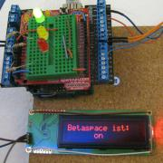

{% filter markdown|typogrify -%}
Ob unsere Räume gerade geöffnet sind kann schon seit März 2012 auf unserer
Webseite neben unseren üblichen Öffnungszeiten live eingesehen werden.
Wer es genauer wissen will sieht unter http://status.ktt-ol.de sogar, wie lange der
Space schon offen ist, wieviele Leute aktuell über unseren Freifunk-Knoten im
Internet surfen und welches Wetter wir drinnen und draußen haben. Wer dann auf
der Statusseite verbleibt, der wird sogar zu der sich ebenfalls live
aktualisierenden Anzahl aller Leute, hinzugezählt, die den Space-Status im Auge
haben.

Hauptbestandteil ist ein aus China importierter imposant großer
Messerschalter, der in Deutschland den VDE-Fingertest nicht bestehen würde.
Dieser hängt an einem Mikrocontroller mit aufgestecktem Internetanschluss. Es
werden nur unschädliche 5 Volt geschaltet, die dem Mikrocontroller sagen, ob
jemand den Schalter gerade umgelegt hat.
Wenn dies geschieht geht sofort eine kleine Nachricht an unseren Server im
Internet, der die frohe Botschaft spontan weiterverteilt. Da das Umlegen des
Schalters nicht zuletzt wegen der spontanen Reaktion im Browser ungeheuer Spaß
macht, haben wir das Posten der Nachricht auf Twitter um einige Minuten
verzögert.
All diese Informationen sind über die Space-API, die von 26 internationalen
Hackerspaces genutzt und weiterentwickelt wird, global verfügbar.
IMG
 Und natürlich gilt: “There’s an App for that” (zumindest für Android)
{%- endfilter %}
Und natürlich gilt: “There’s an App for that” (zumindest für Android)
{%- endfilter %}